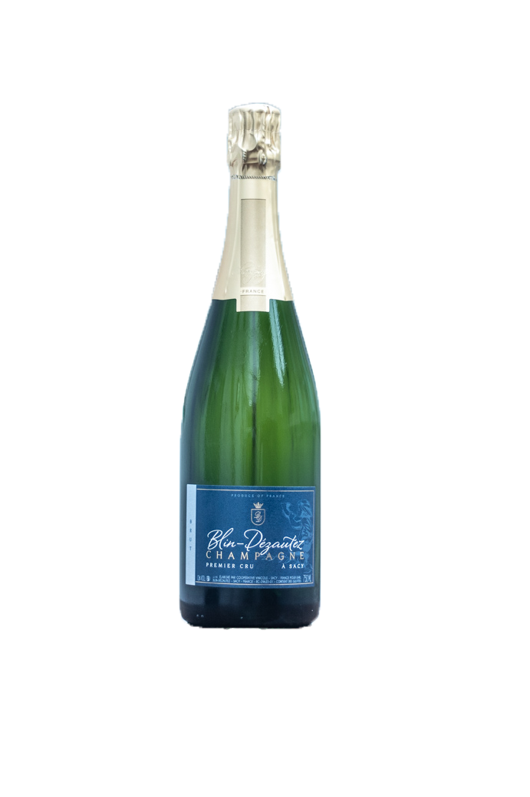
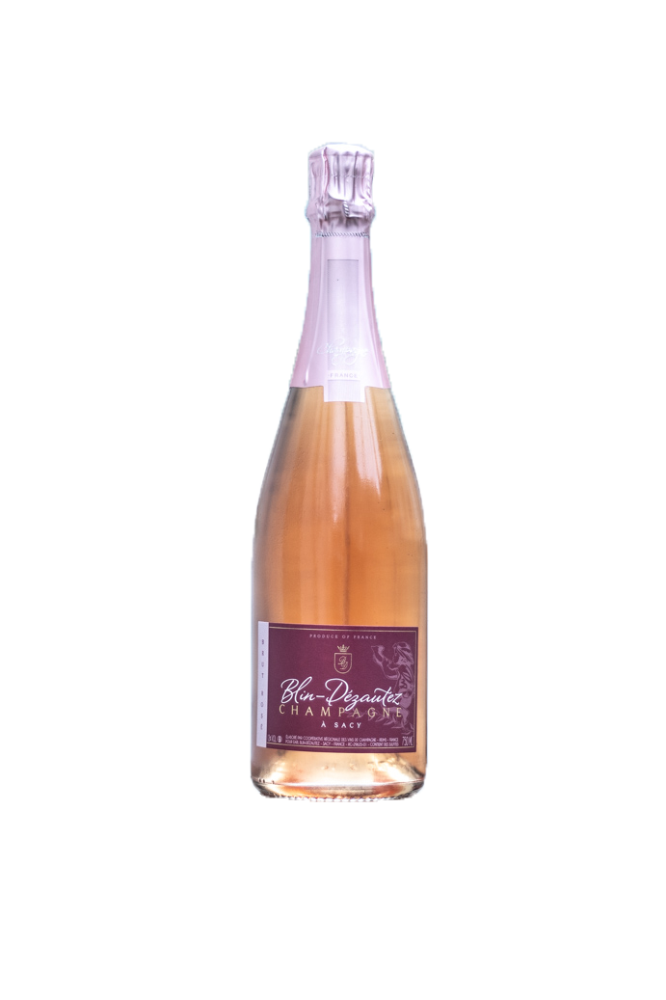
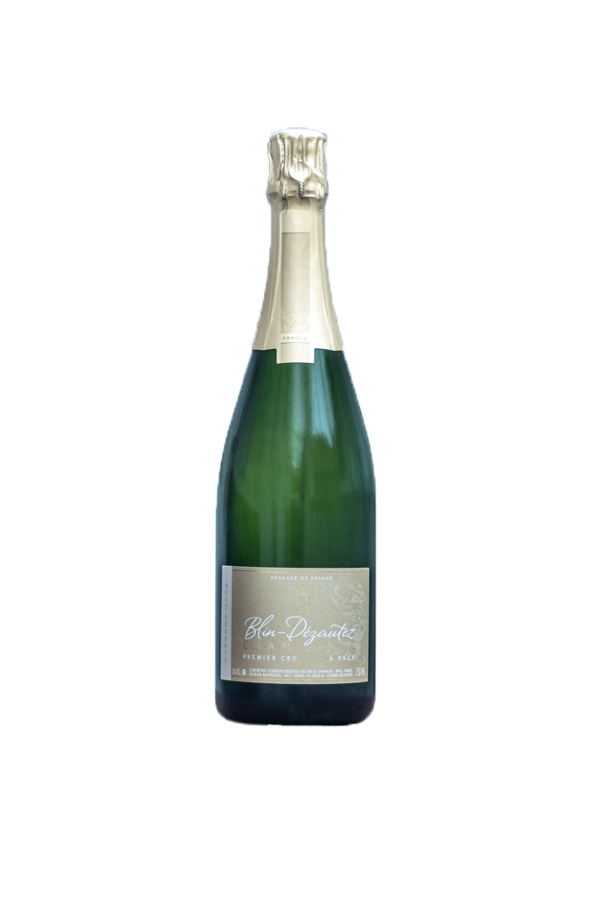
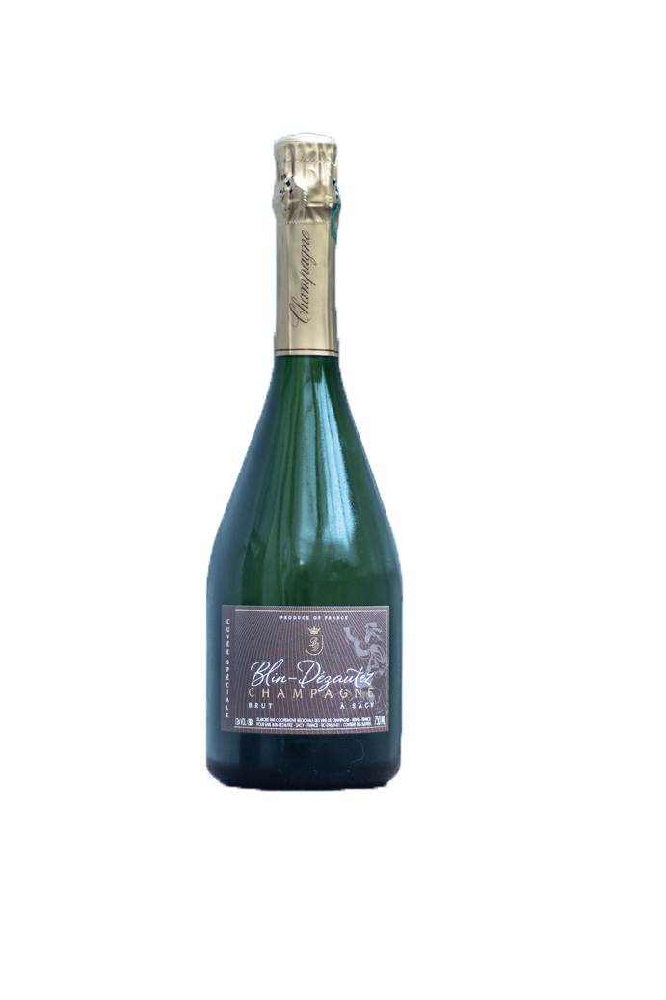
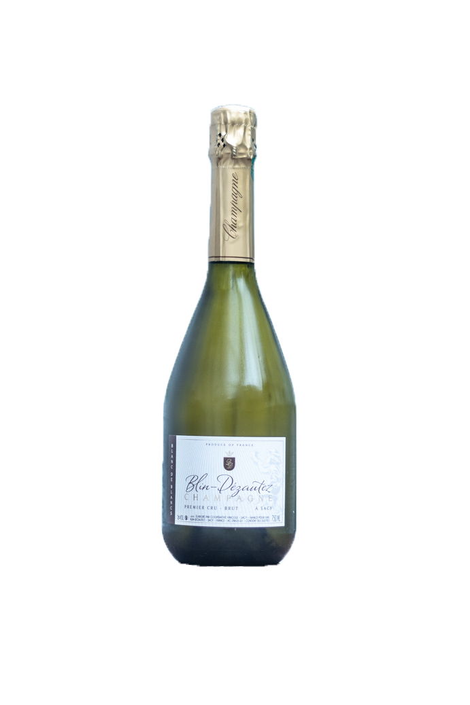
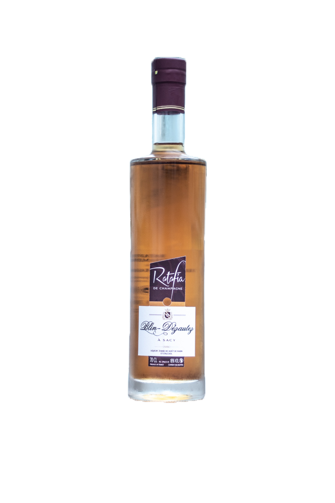

Brut Réserve

L’assemblage des trois cépages en quantité équilibré reflète la typicité de la Champagne. Il allie la puissance du Pinot Noir, le fruité du Pinot Meunier et la fraîcheur du Chardonnay. Vous le dégusterez aussi bien à l’apéritif qu’à toute heure de la journée.
Notre cuvée Tradition se décline également en Demi-Sec (75cl). De même composition que le Brut, il a une tenure sucre plus élevée (dosage qui intervient lors du dégorgement). Cette étape finale de l’élaboration du Champagne permet de clarifier le vin et de fermer la bouteille avec le bouchon de liège et le muselet.
Brut Rosé

Le Pinot Noir vinifié en vin rouge à hauteur de 10 à 15% apporte la couleur rose cuivrée à cette cuvée ainsi que cette saveur de fruits rouges. La présence de Chardonnay à hauteur de 35% offre une note de fraîcheur en bouche. Ce Champagne s’apprécie aussi bien à l’apéritif qu’au dessert ou au cours d’un repas léger.
Brut Réserve

La proportion importante de Chardonnay dans sa composition ainsi que l’assemblage de vins de plus de quatre ans (appelés aussi vins de réserve) confèrent à cette cuvée fraîcheur et maturité. C’est un Champagne qui saura se déguster tout au long du repas.
Cuvée Brut Spéciale

La prédominance du Chardonnay, allié à des vins de réserve matures, confère à cette cuvée un profil aromatique complet de fruits frais, fruits mûris et confits. Champagne impétueux et dense à la fois, à la bulle fine et élégante, tout en harmonie.
Extra-Brut Blanc de Blancs

Comme son nom l’indique, cette cuvée est élaborée uniquement à partir de raisons blancs, le Chardonnay. CE vin à la robe jaune pâle se caractérise par sa fraîcheur en bouche avec une tonalité d’agrumes. Champagne d’apéritif par excellence, il est également apprécié avec les fruits de mer.
Ratafia de Champagne

Le Ratafia, subtil mariage de jus de raison non fermenté et d’eau de vie de marc de Champagne, titre à 18°C d’alcool. Il se déguste très frais à l’apéritif seul ou en cocktail. De couleur ambrée, aux arômes de fruits confits, il accompagne les entrées (le melon par exemple), et les desserts, et particulièrement les desserts chocolatés. Incorporé à des sauces, il relèvera la richesse de ses arômes.
❮
❯